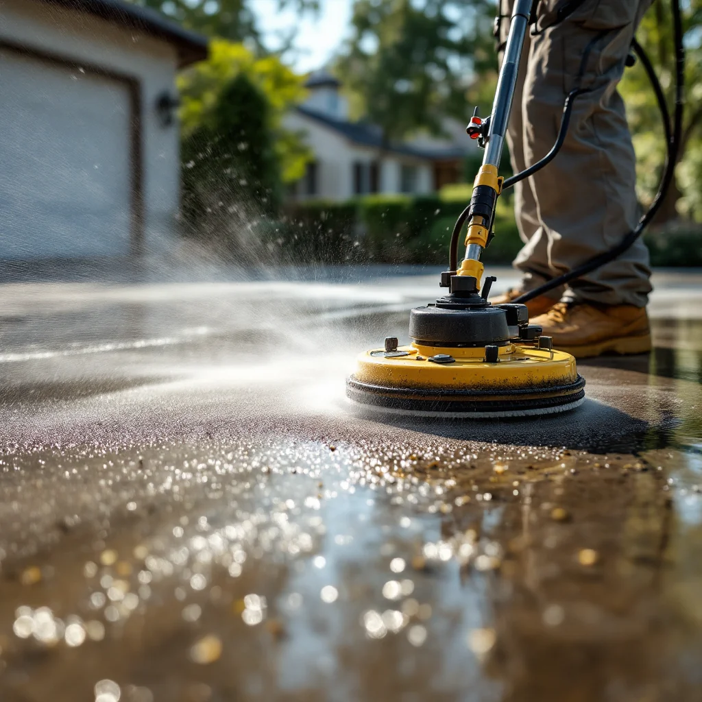

Driveway Cleaning in Knoxville, TN

Concrete & Paver Driveway Pressure Washing
Your driveway is one of the first things visitors notice. Oil stains, tire marks, mold, and ground-in dirt can make even a nice property look neglected. Professional pressure washing restores your driveway to like-new condition in just a couple of hours.
We use commercial surface cleaners that provide even, streak-free results — no tiger striping or uneven lines you sometimes see with consumer equipment.
Surfaces We Clean
- Poured concrete driveways
- Stamped and decorative concrete
- Brick and paver driveways
- Asphalt (low-pressure wash)
- Garage floors
- Sidewalks and walkways
Driveway Cleaning Prices
Standard two-car driveways in Knoxville typically cost $150–$250. Larger driveways or those with heavy staining may run $250–$350. We include sidewalks and walkway edges at no extra charge for most jobs.
Bundle your driveway with a house wash and save 10–15%. Get your free estimate.